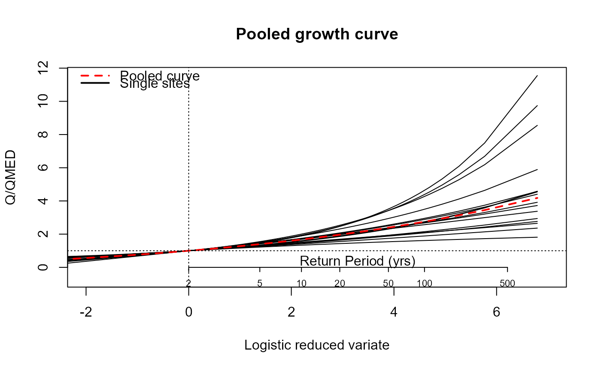
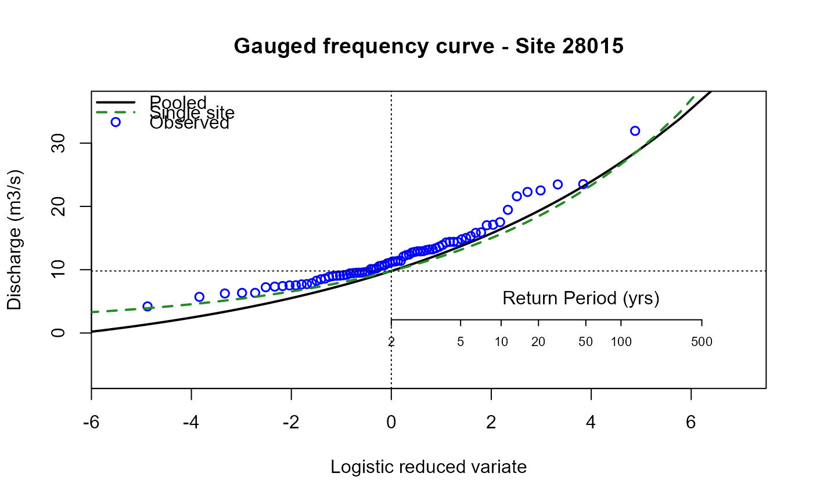

Plots the extreme value frequency curve or growth curve for gauged or ungauged pooled groups
Usage
EVPool(
x,
AMAX = NULL,
gauged = FALSE,
dist = "GenLog",
QMED = NULL,
Title = "Pooled growth curve",
UrbAdj = FALSE,
CDs
)Arguments
- x
pooling group derived from the Pool() function
- AMAX
the AMAX sample to be plotted in the case of gauged. If NULL, & gauged equals TRUE, the AMAX from the first site in the pooling group is used
- gauged
logical argument with a default of FALSE. If FALSE, the plot is the ungauged pooled curve accompanied by the single site curves of the group members. If TRUE, the plot is the gauged curve and single site curve with the observed points added
- dist
a choice of distribution. Choices are "GEV", "GenLog", "Kappa3", or "Gumbel". The default is "GenLog"
- QMED
a chosen QMED to convert the curve from a growth curve to the frequency curve
- Title
a character string. The user chosen plot title. The default is "Pooled growth curve"
- UrbAdj
a logical argument with a default of FALSE. If TRUE an urban adjustment is applied to the pooled growth curve
- CDs
catchment descriptors derived from either GetCDs or CDsXML. Only necessary if UrbAdj is TRUE
Examples
# Get some CDs, form an ungauged pooling group and apply EVPool
cds_28015 <- GetCDs(28015)
pool_28015 <- Pool(cds_28015, exclude = 28015)
#> Warning: The exclude index did not match any gauges that are suitable for pooling and have URBEXT2015 below UrbMax
EVPool(pool_28015)

# Do the same for the gauged case, change the title, and convert with a QMED of 9.8
pool_g_28015 <- Pool(cds_28015)
EVPool(pool_g_28015, gauged = TRUE, Title = "Gauged frequency curve - Site 28015", QMED = 9.8)
